청소년상담사-3급(1교시) (2017-09-16 기출문제)
1과목: 발달심리
1. 노년기 인지발달에 관한 설명으로 옳은 것은?
- 정보처리 속도가 크게 증가한다.
- 결정지능의 감퇴가 유동지능보다 현저해진다.
- 의미기억이 일화기억보다 더 많이 쇠퇴한다.
- 인지발달의 변화양상에서 개인차가 더 커지게 된다.
- 정보의 조직화와 정교화 책략 사용이 증가한다.
(정답률: 49%)

2. 발달 이론가와 성인 발달에 관한 주장이 바르게 연결되지 않은 것은?
- 발테스와 발테스(P. Baltes & M. Baltes) -성공적 노화를 선택, 최적화, 상실의 3가지 요인으로 설명한다.
- 에릭슨(E. Erikson) - 성인중기에 생산성을 확립할 방법을 찾지 못한 성인들은 침체감을 경험한다.
- 해비거스트(R. Havighurst) - 사회적 활동수준을 유지하는 것이 성인후기 삶의 만족도를 높인다.
- 레빈슨(D. Levinson) - 인생주기 중 모두 5번에 걸친 전환기(과도기)를 제안한다.
- 라부비비에(G. Labouvie - Vief) - 성인기에는 가설적 사고에서 실용적 사고로 변화한다.
(정답률: 55%)
3. 청소년기 자아정체감에 관한 설명으로 옳지 않은 것은?
- 청소년기를 거쳐 성인기에 이르기까지 발달이 계속된다.
- 부모의 양육행동은 자아정체감 형성에 영향을 미친다.
- 청소년기의 정체감 유예(moratorium)는 부적응적인 것이다.
- 부모의 가치나 기대를 그대로 수용하여 선택하는 경우를 정체감 유실(foreclosure)이라 한다.
- 추상적 사고의 발달은 자아정체감 발달과 관련이 있다.
(정답률: 69%)
4. 발달이론에 관한 설명으로 옳은 것을 모두 고른 것은?
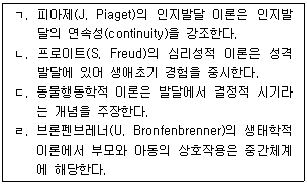
- ㄱ, ㄴ
- ㄴ, ㄷ
- ㄷ, ㄹ
- ㄱ, ㄴ, ㄷ
- ㄴ, ㄷ, ㄹ
(정답률: 45%)
5. 청소년기 신경계 발달 특징에 관한 설명으로 옳은 것을 모두 고른 것은?
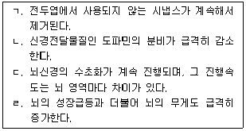
- ㄱ, ㄴ
- ㄱ, ㄷ
- ㄷ, ㄹ
- ㄱ, ㄴ, ㄹ
- ㄴ, ㄷ, ㄹ
(정답률: 69%)
6. 영아기 발달의 특징에 관한 설명으로 옳지 않은 것은?
- 감각 중 시각이 가장 늦게 발달한다.
- 습관화 절차로 영아기 학습능력을 관찰할 수 있다.
- 깊이 지각은 만 1세 이전에 발달한다.
- 만 3개월된 영아는 언어의 음소를 변별할 수 있다.
- 생후 1주된 신생아는 지연모방을 할 수 있다.
(정답률: 57%)
7. 유아기 소근육 운동기술의 발달을 순서대로 바르게 나열한 것은?
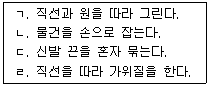
- ㄱ - ㄴ - ㄹ – ㄷ
- ㄴ - ㄱ - ㄷ – ㄹ
- ㄴ - ㄱ - ㄹ - ㄷ
- ㄷ - ㄹ - ㄱ – ㄴ
- ㄹ - ㄴ - ㄱ - ㄷ
(정답률: 70%)
8. 다음에 제시된 아동의 사회인지능력을 측정하는 과제는?
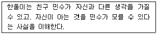
- 자기 인식 과제
- 정서 조절 과제
- 심적 회전 과제
- 틀린 믿음 과제
- 애착 과제
(정답률: 60%)
9. 다음과 같은 특징을 보이는 아동기 장애는?
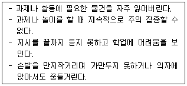
- 주의력결핍 과잉행동장애
- 틱장애
- 적대적 반항장애
- 품행장애
- 자폐스펙트럼장애
(정답률: 77%)
10. 피아제(J. Piaget) 이론에서 생후 10개월 된 영아가 할 수 있는 행동으로 적합한 것을 모두 고른 것은?
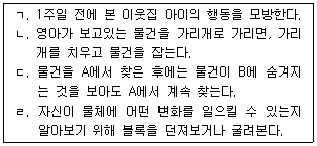
- ㄱ, ㄴ
- ㄴ, ㄷ
- ㄷ, ㄹ
- ㄱ, ㄴ, ㄷ
- ㄴ, ㄷ, ㄹ
(정답률: 39%)
11. 다음 행동은 콜버그(L. Kohlberg)가 제안한 도덕발달의 어떤 단계에 해당하는가?
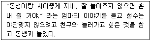
- 처벌 –복종 지향
- 단순 쾌락 지향
- 착한 소년-착한 소녀 지향
- 사회질서 유지 지향
- 사회계약 지향
(정답률: 76%)
12. 까꿍놀이와 같은 사회놀이에 관한 설명으로 옳지 않은 것은?
- 언어발달과 관련이 없다.
- 사회적 발달에 중요하다.
- 두 사람 간의 정서적 교류를 촉진한다.
- 생후 4∼6개월에 시작된다.
- 주고받기의 기본을 배우게 된다.
(정답률: 68%)
13. 공동주의(joint attention)에 관한 설명으로 옳지 않은 것은?
- 타인이 바라보는 곳과 동일한 방향으로 따라 보는 것이다.
- 생후 3개월 이전에는 나타나지 않는다.
- 상대방의 마음을 이해하는데 중요하다.
- 공동주의를 더 많이 하는 아동이 언어발달이 더 빠르다.
- 주의력결핍 과잉행동장애 아동은 공동주의에 결함이 있다.
(정답률: 41%)
14. 기형발생물질에 관한 설명으로 옳은 것을 모두 고른 것은?
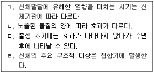
- ㄱ, ㄴ
- ㄱ, ㄷ
- ㄴ, ㄹ
- ㄷ, ㄹ
- ㄱ, ㄴ, ㄷ
(정답률: 79%)
15. 다음은 토마스와 체스(A. Thomas & S. Chess)의 기질 모델에서 어떤 유형에 해당하는가?
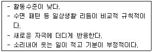
- 순한 기질
- 까다로운 기질
- 억제형 기질
- 우울한 기질
- 느린 기질
(정답률: 57%)
16. 다음과 같은 상황을 설명하는 비고츠키(L. Vygotsky)의 개념이 아닌 것은?
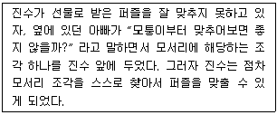
- 사적 언어
- 발판화(scaffolding)
- 유도된 참여
- 근접발달 영역
- 유도된 학습
(정답률: 65%)
17. 에릭슨(E. Erikson)이 제안한 발달단계별 위기의 순서가 바르게 나열된 것은?
- 신뢰 대 불신-근면성 대 열등감 -자율성 대 수치심
- 주도성 대 죄책감-자율성 대 수치심-친밀감 대 고립감
- 정체성 대 역할 혼란 -생산성 대 침체감-근면성 대 열등감
- 자율성 대 수치심-근면성 대 열등감-정체성 대 역할 혼란
- 생산성 대 침체감-친밀감 대 고립감-자아통합 대 절망
(정답률: 64%)
18. 다음에서 설명하는 애착 유형은?
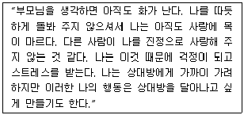
- 안정 애착
- 저항 애착
- 회피 애착
- 혼란 애착
- 거부 애착
(정답률: 52%)
19. 만 8개월 영아는 양육자가 눈에 보이지 않으면 심한 불안을 보이며 양육자를 찾는다. 이러한 현상과 관련된 영아기 인지발달은?
- 보존 개념
- 지각 항상성
- 대상 영속성
- 자기 중심성
- 상징적 사고
(정답률: 77%)
20. ( )에 들어갈 내용으로 적합한 것은?
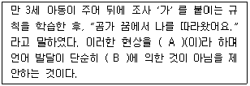
- A: 변형 규칙 B: 보편문법
- A: 과잉 일반화 B: 보편문법
- A: 변형 규칙 B: 모방
- A: 통사적 제약 B: 보편문법
- A: 과잉 일반화 B: 모방
(정답률: 47%)
21. 만 5세, 7세, 9세 아동 각각 100명을 표집하고 이들을 대상으로 실험을 실시하여 연령에 따른 시공간적 추론 능력의 발달을 알아보았다. 이러한 연구 설계의 단점에 해당하는 것을 모두 고른 것은?
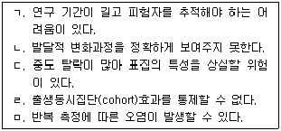
- ㄱ, ㄴ
- ㄱ, ㄷ
- ㄴ, ㄹ
- ㄷ, ㅁ
- ㄷ, ㄹ, ㅁ
(정답률: 65%)
22. 자신에 대한 기술을 통해 나타난 자기 개념 수준이다. 발달적 출현 순서가 바르게 나열된 것은?
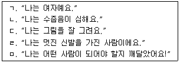
- ㄱ - ㄴ - ㄷ - ㄹ – ㅁ
- ㄱ - ㄹ - ㄷ - ㄴ – ㅁ
- ㄴ - ㄷ - ㄹ- ㄱ - ㅁ
- ㄷ - ㄱ - ㄹ - ㅁ – ㄴ
- ㄹ - ㄱ - ㄷ - ㅁ - ㄴ
(정답률: 68%)
23. 정신역동이론에 따르면 남근기 부모의 위협을 상상하는 아동이 자신의 콤플렉스를 극복 하는 방어기제로 초자아 형성을 유도하는 것은?
- 투사
- 퇴행
- 합리화
- 동일시
- 반동형성
(정답률: 66%)
24. 만 7세 수진이는 할머니에게 받은 선물이 속옷인 것을 발견하고 실망스러웠지만 자신의 마음을 억누르고 웃으며 할머니에게 “고맙습니다.” 라고 말하였다. 이는 수진이가 무엇을 획득했음을 의미하는가?
- 자기 중심성
- 사회적 참조
- 정서표출 규칙
- 문화적 상대성
- 혼합 정서
(정답률: 58%)
25. 다음의 예시는 성 유형화에 관한 이론 중 무엇을 지지하는가?
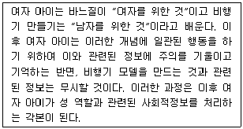
- 핼펀(D. Halpern)의 생물학적 관점
- 반두라(A. Bandura)의 사회학습이론
- 콜버그(L. Kohlberg)의 인지발달이론
- 벰(S. Bem), 마틴(C. Martin)의 성 도식 이론
- 프로이트(S. Freud)의 정신분석이론
(정답률: 73%)
2과목: 집단상담의 기초
26. 인지행동적 접근을 취하는 집단상담의 특징으로 옳은 것은?
- 치료적 변화를 야기하는 것은 기법이 아니라 집단원과의 관계의 질이라고 본다.
- 의미, 목표지향적 행동, 소속감, 사회적 관심에 초점을 둔다.
- 바람직한 변화를 유발하기 위해 행동의 변화를 우선시한다.
- 심리적 문제는 역기능적 인지 처리의 결과로 발생한다고 본다.
- 영적이고 자아초월적인 의식 상태, 신비 경험, 절정 경험 등에 관심을 갖는다.
(정답률: 58%)
27. 사실적 이야기를 장황하게 말하는 집단원에 대한 상담자의 개입 방법으로 옳지 않은 것은?
- 사실적 이야기를 장황하게 말하는 것과 자기 개방을 차별화시켜 줄 필요가 있다.
- 이야기의 세부 사항보다는 그 사건에 대한 집단원의 감정과 생각에 초점을 맞추도록 돕는다.
- 구체적이고 명료하게 자신을 표현하도록 가르칠 필요가 있다.
- 방어의 한 형태이므로 연결하기(linking) 기법을 통해 그 행동을 멈추도록 돕는다.
- 공감적 이해를 통해 집단원의 사실적 이야기가 현재에 미친 영향을 표현하도록 돕는다.
(정답률: 53%)
28. 마음챙김 및 수용 기반 인지행동치료의 접근법에 관한 설명으로 옳은 것을 모두 고른 것은?
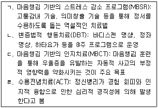
- ㄱ, ㄴ
- ㄷ, ㄹ
- ㄱ, ㄴ, ㄷ
- ㄴ, ㄷ, ㄹ
- ㄱ, ㄴ, ㄷ, ㄹ
(정답률: 42%)
29. 숨겨진 안건(hidden agenda)에 관한 설명으로 옳지 않은 것은?
- 집단 이전에 형성된 집단원 간 갈등, 강제적인 참여, 특정 종교 등이 숨겨진 안건에 해당된다.
- 숨겨진 안건이 있을 경우 집단원은 자신을 방어하고, 위험을 감수하려고 하지 않는다.
- 상담자는 집단원이 숨겨진 안건을 알아차려서 말로 표현하도록 도전할 필요가 있다.
- 집단 과정 중에 형성된 갈등은 숨겨진 안건에 해당되지 않는다.
- 집단초기라도 숨겨진 안건이 집단 역동에 영향을 미친다면 이를 표면화시켜서 다룰 필요가 있다.
(정답률: 66%)
30. 해결중심 집단상담 이론에 관한 설명으로 옳지 않은 것은?
- 심리적 장애나 역기능적 행동보다는 긍정적인 측면에 초점을 맞춘다.
- 초이론적 변화 모델에 기반을 두고 단계별로 적절한 개입을 한다.
- 문제대화보다는 해결대화에 참여하도록 독려한다.
- 집단원의 강점, 자원, 성공경험을 활용한다.
- 상담자는 '알지 못함의 자세'를 취한다.
(정답률: 50%)
31. 다음 특징들이 공통적으로 나타나는 집단발달단계에서 상담자의 역할로 옳은 것은?
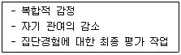
- 행동 패턴의 의미를 설명하여 집단원이 더 깊은 자기 탐색에 도달할 수 있도록 돕는다.
- 집단원이 두려움과 기대를 표현하도록 도움으로써 신뢰를 형성한다.
- 집단에서 해결하지 못한 문제를 표현하고 다룰 수 있는 기회를 제공한다.
- 보편성을 제공할 수 있는 공통 주제들을 탐색하고 다른 집단원의 작업과 연계한다.
- 집단원 간에 발생한 갈등 상황을 인식하고 다룬다.
(정답률: 64%)
32. 집단응집력에 관한 설명으로 옳지 않은 것은?
- 집단 내에서 함께 하는 느낌 또는 공동체라는 느낌을 의미한다.
- 집단회기가 진행되면서 자연스럽게 발달되고 유지된다.
- 집단매력도와 관련이 있다.
- '지금-여기'에 초점을 맞추어 피드백을 하려는 집단원의 의지는 집단응집력 지표 중 하나이다.
- 초기부터 종결 단계까지 항상 중요하다.
(정답률: 50%)
33. 코리(G. Corey)가 제안한 집단 초기 단계의 특징으로 옳은 것을 모두 고른 것은?
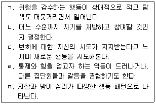
- ㄱ, ㄴ
- ㄴ, ㄷ
- ㄱ, ㄴ, ㅁ
- ㄴ, ㄹ, ㅁ
- ㄱ, ㄷ, ㄹ, ㅁ
(정답률: 34%)
34. 청소년 집단상담 운영 시 고려해야 할 사항으로 옳지 않은 것은?
- 집단상담에 적합하지 않은 청소년을 선별하여 제외한다.
- 청소년 집단상담 운영에 관련된 법률을 충분히 숙지하여야 한다.
- 자발성이 낮은 집단인 경우 집단초기에 재미있는 활동들을 활용하는 것이 좋다.
- 개인의 목표를 현실적인 수준에서 달성 가능하도록 설정하는 것이 좋다.
- 참여동기가 낮은 집단인 경우 집단초기 오리엔테이션을 짧게 진행하는 것이 좋다.
(정답률: 61%)
35. 청소년 집단상담에서 피드백에 관한 설명으로 옳지 않은 것은?
- 집단원의 변화에 대한 동기를 높일 수 있다.
- 집단원은 자신의 행동이 타인에게 미치는 영향을 이해할 수 있다.
- 상담자는 초기에 부정적 피드백, 종결기에 긍정적 피드백을 주로 사용한다.
- 상담자의 피드백은 집단원에게 교육적 효과가 있다.
- 상담자는 자신의 피드백에 대한 집단원의 반응을 면밀히 관찰해야 한다.
(정답률: 69%)
36. 청소년 집단상담자의 자기개방 기법에 관한 설명으로 옳지 않은 것은?
- 집단원과 신뢰로운 관계가 형성된 후에 자기개방을 한다.
- 타인의 경험이 아니라 반드시 자기 자신의 경험을 표현한다.
- 집단원이 관심을 가지고 있는 주제에 대해 자기개방을 한다.
- 종결단계에서 적극적으로 사용해야 한다.
- 자기개방을 하기 위해서는 모험을 감행해야 한다.
(정답률: 62%)
37. 청소년 집단상담자의 바람직한 행동으로 옳은 것은?
- 집단원이 말할 때마다 즉각적인 반응을 한다.
- 하위집단 간의 갈등이 자체적으로 해결될 때까지 기다린다.
- 지속적으로 자기개방을 한다.
- 집단원에게 끊임없는 칭찬과 지지를 한다.
- 침묵하는 집단원에 대해 수용적인 태도를 보여준다.
(정답률: 47%)
38. 다음 상황에서 상담자가 적용한 집단기술을 모두 고른 것은?
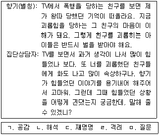
- ㄱ, ㅁ
- ㄱ, ㄹ, ㅁ
- ㄴ, ㄷ, ㄹ
- ㄱ, ㄷ, ㄹ, ㅁ
- ㄴ, ㄷ, ㄹ, ㅁ
(정답률: 55%)
39. 청소년 집단상담자의 인간적 자질로 옳은 것을 모두 고른 것은?
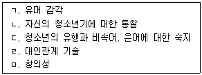
- ㄱ, ㄴ, ㄷ
- ㄱ, ㄴ, ㅁ
- ㄴ, ㄷ, ㄹ
- ㄴ, ㄷ, ㅁ
- ㄱ, ㄷ, ㄹ, ㅁ
(정답률: 45%)
40. 학교폭력 가해자가 교칙에 따라 의무적으로 참여하는 청소년 집단상담에서 상담자의 역할로 옳은 것은?
- 집단원의 참여거부권을 수용해야 한다.
- 부모나 법적 보호자의 허락을 확인하지 않아도 된다.
- 사전 동의 절차를 진행하지 않아도 된다.
- 비밀보장을 반드시 지켜야 한다.
- 집단원에게 집단이탈시 발생하는 결과에 대해 고지하지 않아도 된다.
(정답률: 49%)
41. 집단상담 이론에 관한 설명으로 옳은 것은?
- REBT는 CBT와 달리 집단원에게 교육적인 입장을 취한다.
- 이야기치료는 현재 행동을 평가하고, 욕구실현이 가능하도록 계획하고 실천하게 돕는다.
- 현실치료는 집단원의 직접적인 체험, 자각, 지금-여기, 해결되지 않은 문제 등을 다룬다.
- 게슈탈트는 실제적이고 시간 효율적인 개입으로 무엇이 잘못되었는지에서 무엇이 잘되고 있는지로 초점을 바꾼다.
- REBT는 상담자의 무조건적 수용을 통해 집단원으로 하여금 자신이 받아들여질 것이라고 느끼게 한다.
(정답률: 43%)
42. 현실치료 집단상담에서 각 질문에 해당되는 WDEP모델을 순서대로 나열한 것은?
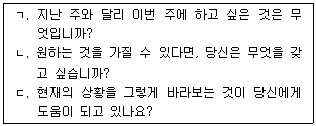
- D - E – P
- D - W – E
- W - D – E
- W - D – P
- W - E - P
(정답률: 59%)
43. 상담윤리에 위배되는 집단상담자의 행동은?
- 비밀보장의 중요성 및 한계상황을 설명했다.
- 상담자의 자격과 경력이 집단 진행에 적합하다는 점을 제시했다.
- 집단원 다수의 압력으로부터 하늘(별칭)을 보호하는 개입을 했다.
- 3회기에 알게 된 산(별칭)의 자살 구상을 8회기 집단 종결 후 학급담임교사에게 즉각 알렸다.
- 개인상담 병행 여부를 확인하고 집단상담 참여 사실을 개인상담자에게 알리도록 조언했다.
(정답률: 66%)
44. 집단상담자의 역할과 작업의 연결이 옳지 않은 것은?
- 집단의 시작을 돕기 - 두 사람씩 만나서 5분간 예기불안, 기대 등을 나누게 했다.
- 회기 종결을 돕기 - 종결활동을 구조화하여 미완성문장을 돌아가면서 완성하게 했다.
- 집단 분위기 조성 - 진솔하고 온화한 분위기를 만드는 워밍업 활동을 진행했다.
- 상호작용 촉진 - 집단원이 자신을 공개하면 한 사람 이상 피드백할 것을 제안했다.
- 행동모범 보이기 - 회기 중 집단원의 행동과 집단 역동을 관찰하여 기록했다.
(정답률: 65%)
45. 집단상담계획에 관한 설명으로 옳은 것을 모두 고른 것은?
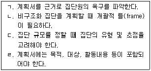
- ㄱ, ㄴ
- ㄱ, ㄷ
- ㄴ, ㄹ
- ㄴ, ㄷ, ㄹ
- ㄱ, ㄴ, ㄷ, ㄹ
(정답률: 43%)
46. 다음 상황의 해결에 공통적으로 유용한 집단상담기술은?
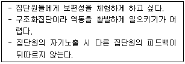
- 연결하기
- 차단하기
- 해석하기
- 명료화하기
- 자기개방하기
(정답률: 54%)
47. 집단상담 참여소감의 일부이다. ( )에 들어갈 내용을 순서대로 나열한 것은?
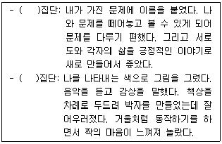
- 강점중심상담, 게슈탈트
- 이야기치료, 게슈탈트
- 이야기치료, 표현예술치료
- 해결중심상담, 게슈탈트
- 강점중심상담, 표현예술치료
(정답률: 70%)
48. 시간제한적 단기집단상담을 성공적으로 진행하기 위한 상담자 또는 집단원의 역할로 옳은 것을 모두 고른 것은?
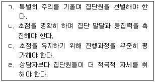
- ㄱ, ㄴ
- ㄷ, ㄹ
- ㄱ, ㄴ, ㄷ
- ㄴ, ㄷ, ㄹ
- ㄱ, ㄴ, ㄷ, ㄹ
(정답률: 43%)
49. 집단상담자 기술 사용에 관한 설명으로 옳은 것은?
- 집단 역동을 촉진하는 상담자의 기술은 집단 회기의 상황에 맞춰 사용될 때 가장 유용하다.
- 연결하기, 차단하기 같은 개인상담 기본기술을 집단상담에서도 능숙하게 사용할 수 있어야 한다.
- 대부분의 집단상담기술은 일상생활에서도 경험하는 것들이어서 집단원들의 변화를 일으키는 데 효과적이다.
- 여성주의 집단상담자는 집단원의 능동성ㆍ긍정성 증진을 위해 집단참여 전 변화 경험을 묻는 것이 바람직하다.
- 통합적 접근의 집단 구성 시 이론적 통합보다 기술적 통합에 초점을 둘 때 기법을 더 풍부하게 개발할 가능성이 있다.
(정답률: 50%)
50. 집단의 유형 중 상담집단의 특징으로 옳지 않은 것은?
- 주제 및 내용, 집단지도성에 초점
- 상호피드백 및 지금-여기에 초점
- 집단원의 자발성 및 주관성에 초점
- 일상적인 삶의 문제 해결에 초점
- 대인관계 과정에 초점
(정답률: 42%)
3과목: 심리측정 및 평가
51. 심리적 구성개념에 관한 설명으로 옳은 것은?
- 구체적이고 가설적인 개념이다.
- 물리적으로 존재하는 개념이다.
- 측정 시 오차가 발생하지 않는다.
- 심리검사를 통해 수량화가 불가능하다.
- 조작적 정의를 통해 간접적으로 측정할 수 있다.
(정답률: 63%)
52. 규준에 관한 설명으로 옳은 것을 모두 고른 것은?
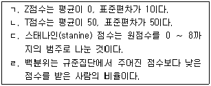
- ㄱ, ㄴ
- ㄱ, ㄷ
- ㄱ, ㄹ
- ㄴ, ㄷ
- ㄴ, ㄹ
(정답률: 68%)
53. 척도에 관한 설명으로 옳지 않은 것은?
- 비율척도: 절대영점이 존재하지 않는다.
- 서열척도: 단위 사이의 간격에 관한 정보가 없다.
- 등간척도: 수치 간의 비율적 정보는 가능하지 않다.
- 명명척도: 개인 간의 순위에 관한 정보를 알 수 없다.
- 등간척도: 수치 사이의 간격이 동일하다는 정보를 제공한다.
(정답률: 65%)
54. 신뢰도에 관한 설명으로 옳지 않은 것은?
- 반분법은 신뢰도를 과소 추정하게 된다.
- 동형법은 검사-재검사법의 단점을 보완할 수 있다.
- 검사-재검사법은 두 검사 간의 시간간격을 고려한다.
- 신뢰도계수는 진점수 변량에 대한 관찰점수 변량의 비율이다.
- 내적일관성 방법은 단일시행으로 신뢰도계수를 구할 수 있다.
(정답률: 41%)
55. 검사가 측정하려고 하는 이론적 구성개념이나 특성을 측정하는 정도를 검증하는 것은?
- 안면타당도(face validity)
- 내용타당도(content validity)
- 구성타당도(construct validity)
- 공인타당도(concurrent validity)
- 예언타당도(predictive validity)
(정답률: 63%)
56. 다음에 해당하는 관찰법은?
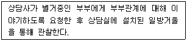
- 유사관찰법
- 자연관찰법
- 자기관찰법
- 참여관찰법
- 무선관찰법
(정답률: 56%)
57. 심리검사 선정기준으로 옳지 않은 것은?
- 신뢰도와 타당도가 높은 검사를 선정한다.
- 검사의 경제성과 실용성을 고려해 선정한다.
- 수검자의 특성과 상관없이 의뢰 목적에 맞춰 선정한다.
- 객관적 검사와 투사적 검사의 장단점을 고려해 선정한다.
- 여러 검사 중 수검자에게 가장 필요한 정보를 제공해 줄 수 있는 검사를 선정한다.
(정답률: 74%)
58. 심리검사 실시에 관한 설명으로 옳은 것은?
- 검사자의 기대는 검사결과에 영향을 미치지 않는다.
- 신경심리검사를 실시할 때 수검자의 정서적 안정도는 고려하지 않는다.
- 검사 전 수집한 수검자에 관한 정보는 검사 과정에 영향을 미치지 않는다.
- 표준화검사에서 검사자는 수검자가 동기를 가질 수 있도록 독려할 수 있다.
- 표준화검사는 검사실시에 관한 표준조건을 엄격히 준수할 것을 요구하지 않는다.
(정답률: 73%)
59. 심리검사에 관한 윤리적 지침으로 옳지 않은 것은?
- 자격을 갖춘 사람이 검사를 실시해야 한다.
- 수검자에게 검사문항을 사전에 보여주지 않는다.
- 반응의 왜곡을 방지하기 위해 검사 목적을 알리지 않는다.
- 기관에서는 검사자료에 대한 접근을 엄격히 통제해야 한다.
- 법이 요구할 경우 검사결과는 수검자의 동의없이 공개할 수도 있다.
(정답률: 58%)
60. MBTI에 관한 설명으로 옳은 것을 모두 고른 것은?
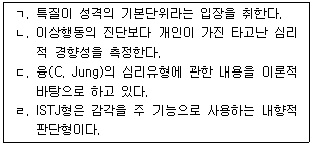
- ㄱ, ㄴ
- ㄱ, ㄷ
- ㄱ, ㄴ, ㄷ
- ㄴ, ㄷ, ㄹ
- ㄱ, ㄴ, ㄷ, ㄹ
(정답률: 46%)
61. 지능검사와 그 활용에 관한 설명으로 옳지 않은 것은?
- 개인의 성격을 측정하는 도구로도 활용할 수 있다.
- 학습과 진로지도 자료로 활용할 수 있다.
- 지능지수가 높다고 해서 반드시 높은 학업성취를 보이는 것은 아니다.
- 검사의 전체 소요시간은 여러 요인에 따라 달라질 수 있다.
- 웩슬러 지능검사의 특징 중 하나는 정신연령 개념을 도입한 것이다.
(정답률: 37%)
62. 한국판 카우프만 아동용 지능검사(K-ABC)에 관한 설명으로 옳은 것은?
- 신경심리학과 인지처리과정 이론을 근거로 개발되었다.
- 만 6세∼16세 11개월의 아동과 청소년에게 실시할 수 있다.
- 습득도척도는 순차처리척도와 동시처리척도로 구성된다.
- 개인의 지적능력을 평가하기 위해 언어성, 동작성 및 전체 IQ를 산출한다.
- 언어장애를 가지고 있는 아동에게 적용하지 못한다.
(정답률: 25%)
63. 성격평가질문지(PAI)에서 치료고려척도에 해당하는 것은?
- 공격성척도
- 지배성척도
- 온정성척도
- 약물문제척도
- 저빈도척도
(정답률: 42%)
64. MMPI-A에서 품행문제를 측정하며 거짓말, 적대적이고 반항적인 행동, 낮은 치료동기를 반영하는 척도는?
- 척도 2
- 척도 4
- 척도 7
- 척도 8
- 척도 0
(정답률: 58%)
65. MMPI-2의 척도에 관한 설명으로 옳은 것은?
- FBS : 개인의 상해와 관련하여 자신의 증상을 과장하려는 경향을 측정
- VRIN : 모든 문항에 대해 '그렇다' 또는 '아니다'로 반응하는 경향을 탐지
- 척도 1 : 심리적 에너지와 열정, 활력, 과장된 자기지각 경향을 측정
- 척도 4 : 대인관계 상황에서 수줍음, 직업에 대한 흥미를 측정
- 척도 9 : 신체기능에 대한 과도한 불안과 집착, 염려하는 경향을 측정
(정답률: 42%)
66. K-WAIS-IV에 관한 설명으로 옳지 않은 것은?
- 15개의 소검사로 구성되어 있다.
- 전체척도 점수(FSIQ)가 70∼79이면 경계선 범위로 분류한다.
- 전체척도 점수(FSIQ)는 전반적 인지능력을 나타내는 평가치이다.
- 작업기억(WMI)의 핵심소검사는 숫자, 산수 소검사이다.
- 언어이해지표(VCI)의 핵심소검사는 상식, 이해, 공통성, 어휘 소검사이다.
(정답률: 47%)
67. 내담자가 3개월 전부터 환청과 함께 대인관계를 기피하고 두려워하는 증상, 우울하고 죽고 싶다는 생각, 원인을 알 수 없는 두통, 만성적인 피로감을 호소하며 상담실을 방문했다. MMPI-2에서 이 내담자의 증상을 측정하는 것과 관련이 적은 척도는?
- F척도
- 척도 1
- 척도 2
- 척도 5
- 척도 8
(정답률: 45%)
68. 성격검사에 관한 설명으로 옳지 않은 것은?
- 16성격요인검사는 케텔(R. Cattell)의 성격특성 이론을 근거로 개발되었다.
- 에니어그램은 인간의 성격유형을 8개로 설명한다.
- NEO 인성검사는 Big 5 성격요인을 평가한다.
- 캘리포니아 성격검사(CPI)는 해석이 용이하도록 4개의 군집으로 나누어 설명한다.
- MBTI는 16가지의 성격유형을 포함한다.
(정답률: 57%)
69. 로르샤하(Rorschach) 검사의 결정인 기호 중 무채색 반응에 해당하는 것은?
- C
- F
- T
- Y
- C'
(정답률: 68%)
70. 집-나무-사람(HTP) 검사에 관한 일반적인 해석으로 옳지 않은 것은?
- 과도한 지우개 사용은 불안정, 초조함을 반영한다.
- 지나치게 작은 크기의 그림은 높은 활동성과 심리적 에너지를 반영한다.
- 그림이 용지의 아래쪽에 위치한 경우 불안정, 부적절감을 반영한다.
- 나무 그림에서 둥치(trunk)는 수검자의 자아강도나 심리적 힘에 관한 정보를 제공한다.
- 사람 그림에서 불균형하게 큰 머리는 공상에 몰두하는 경향을 반영하는 것일 수 있다.
(정답률: 71%)
71. 주제통각검사(TAT)에 관한 설명으로 옳은 것은?
- 숫자만 표시된 카드는 성별에 상관없이 성인에게만 실시한다.
- 카드 뒷면에 GF라고 적혀 있는 경우 소녀와 성인 여성 모두에게 실시 가능하다.
- 흑백으로 인쇄된 20장의 그림 카드와 한 장의 백지 카드로 구성되어 있다.
- 마이어스(I. Myers)와 브릭스(K. Briggs)에 의해 개발되었다.
- 사고의 내용이 아니라 순수한 지각 과정에 관한 정보를 제공한다.
(정답률: 57%)
72. 객관적 검사와 비교해 볼 때 투사적 검사에 관한 설명으로 옳은 것을 모두 고른 것은?
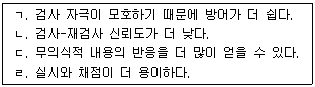
- ㄱ, ㄴ
- ㄱ, ㄷ
- ㄴ, ㄷ
- ㄱ, ㄴ, ㄹ
- ㄴ, ㄷ, ㄹ
(정답률: 66%)
73. 로르샤하(Rorschach) 검사의 엑스너(J. Exner) 종합체계에서 수검자가 자극을 얼마나 인지적으로 조직화했는가를 평가하는 것은?
- R
- Z점수
- AG
- Afr
- Isolate/R
(정답률: 43%)
74. 진로검사에 관한 설명으로 옳은 것은?
- 홀랜드 검사는 개별 실시가 가능하나 집단 실시는 불가능하다.
- 홀랜드의 진로탐색검사는 홀랜드(J. Holland)의 4가지 직업적 성격유형을 바탕으로 한다.
- 위스콘신카드분류검사(WCST)는 직업카드분류검사에 해당한다.
- 한국판 스트롱 직업흥미검사는 일반직업분류(GOT), 기본흥미척도(BIS) 2개로 구성되어 있다.
- 커리어넷의 직업가치관검사는 직업경험을 통하여 충족하고자 하는 욕구 또는 상대적으로 중요시 하는 것을 평가한다.
(정답률: 60%)
75. 벤더게슈탈트검사(BGT)에 관한 설명으로 옳은 것을 모두 고른 것은?
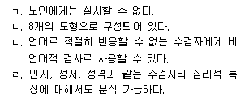
- ㄱ, ㄴ
- ㄱ, ㄷ
- ㄴ, ㄷ
- ㄷ, ㄹ
- ㄱ, ㄴ, ㄹ
(정답률: 64%)
4과목: 상담이론
76. 교류분석의 교차적 교류에 해당하는 것은?
- 자녀: 아빠는 몇 시에 퇴근하세요?
엄마: 학원갈 시간 다 됐지... - 친구1: 지금 몇 시야?
친구2: 3시. - 언니: 오늘 점심은 내가 살게.
동생: 고마워. - 남편: 요즘 애들은 너무 예의가 없어.
아내: 그러게요. 우리 때와는 너무 달라요. - 과장: (지각한 직원에게) 지금 몇 시죠?
직원: 아직 10시가 안 됐는데요.
(정답률: 65%)
77. 상담자 윤리 기준에 위배되지 않는 경우는?
- 동의를 구하지 않고 사례발표를 위해 상담내용을 녹음하였다.
- 상담을 전공한 김교사는 반 학생에게 소정의 상담료를 받으며 주 1회 상담을 진행하였다.
- 약물남용 사실을 알고 부모에게 알리려고 하였으나 내담자가 약물을 중단하겠다고 하여 부모에게 알리지 않았다.
- 상담 중 가정폭력 사실을 알게 되었으나 내담자의 어머니가 자녀의 상처받은 마음만 달래주고 더 이상 개입하지 말아달라고 하여 상담에만 전념하였다.
- 판사가 정보공개를 요청하여 내담자에게 그 사실을 알리고 필요한 최소한의 정보를 공개하였다.
(정답률: 72%)
78. 아들러(A. Adler) 개인심리학의 격려에 관한 설명으로 옳지 않은 것은?
- 상담자의 기본적인 태도이자 마음자세이다.
- 역경에 처했을 때 견뎌낼 수 있는 능력을 발달시킨다.
- 상담의 모든 과정에 사용되며 내담자와 관계를 형성하는 데 유용하다.
- 잘한 일이나 우수한 결과에 초점을 맞추는 행위이다.
- 타인과 긍정적인 관계를 유지하기 위한 핵심적 요소로 인간관계를 촉진하는 역할을 한다.
(정답률: 68%)
79. 상담의 기본원리와 설명의 연결이 옳은 것을 모두 고른 것은?
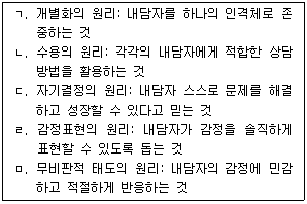
- ㄱ, ㄴ
- ㄷ, ㄹ
- ㄱ, ㄴ, ㄷ
- ㄷ, ㄹ, ㅁ
- ㄴ, ㄷ, ㄹ, ㅁ
(정답률: 56%)
80. 여성주의상담 이론으로 옳은 것을 모두 고른 것은?
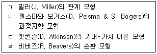
- ㄱ
- ㄴ
- ㄱ, ㄷ
- ㄴ, ㄹ
- ㄴ, ㄷ, ㄹ
(정답률: 55%)
81. 상담초기의 상담자 반응으로 옳지 않은 것은?
- “점심시간에 혼자 밥 먹을 때 기분이 어땠나요?”
- “학교생활에 대해서 좀 더 이야기해 줄 수 있나요?”
- “열심히 공부했는데 결과가 기대에 미치지 못해 실망했군요.”
- “노력하겠다고 말을 하지만 구체적인 행동으로 옮기지는 않고 있네요.”
- “남자친구의 마음을 어떻게 하면 돌릴 수 있을지가 가장 큰 고민이군요.”
(정답률: 66%)
82. 인간중심상담 이론에 관한 설명으로 옳지 않은 것은?
- 자아는 성격의 조화와 통합을 위해 노력하는 원형이다.
- 현재 경험이 자기개념과 불일치할 때 불안을 경험하게 된다.
- 실현화 경향성은 자기를 보전, 유지하고 향상시키고자 하는 선천적 성향이다.
- 가치의 조건화는 주요 타자로부터 긍정적 존중을 받기 위해 그들이 원하는 가치와 기준을 내면화하는 것이다.
- 현상학적 장은 경험적 세계 또는 주관적 경험으로 특정 순간에 개인이 지각하고 경험하는 모든 것을 뜻한다.
(정답률: 43%)
83. 아들러(A. Adler) 개인심리학의 강점으로 옳은 것을 모두 고른 것은?
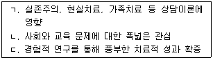
- ㄱ
- ㄴ
- ㄱ, ㄴ
- ㄴ, ㄷ
- ㄱ, ㄴ, ㄷ
(정답률: 37%)
84. 상담자와 내담자 간의 치료적 존중에 관한 설명으로 옳지 않은 것은?
- 내담자의 절망감, 고립감, 실패, 불완전성을 수용한다.
- 서로 가치관과 규범이 다를 때, 상호존중이 어렵다.
- 내담자가 자신의 방향을 선택할 권리를 인정한다.
- 내담자의 책임감 있는 행동능력을 강화한다.
- 상담자가 내담자에 대한 비판을 잠시 보류한다.
(정답률: 63%)
85. 행동주의 이론가와 그들의 이론 내용에 관한 설명이 옳지 않은 것은?
- 파블로프(I. Pavlov) - 개의 소화샘 연구에서 비롯된 고전적 조건형성
- 스키너(B. Skinner) - 반응의 결과가 행동의 재발 빈도를 좌우하는 강화 원리
- 왓슨(J. Watson) - 조작적 조건화를 적용한 정서조건형성
- 달라드와 밀러(J. Dollard & N. Miller) - 역조건 형성이 습관을 바꾸는 과정
- 울프(J. Wolpe) - 새로운 반응이 습관적 반응을 감소시키는 상호억제
(정답률: 53%)
86. 상담 성과 또는 영향에 관한 설명으로 옳은 것은?
- 내담자의 희망과 낙관적 태도는 상담 성과의 필수 요소는 아니다.
- 상담자의 카리스마나 상담 장면의 신비성은 내담자의 변화를 촉진할 수 없다.
- 내담자의 긍정적인 변화에 상담 외적 영향은 크지 않다.
- 상담을 통해서 내담자가 피해를 입을 수도 있다.
- 각 이론의 독특성이 이론 간 공통성보다 상담 성과에 더 작용한다.
(정답률: 62%)
87. 상담의 공통적 치료요인과 설명의 연결이 옳은 것을 모두 고른 것은?
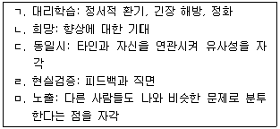
- ㄱ, ㄴ
- ㄴ, ㄷ, ㄹ
- ㄷ, ㄹ, ㅁ
- ㄱ, ㄴ, ㄷ, ㄹ
- ㄱ, ㄴ, ㄷ, ㄹ, ㅁ
(정답률: 47%)
88. 다문화적 관점에서 각 상담이론의 장점 또는 단점의 연결이 옳은 것은?
- 여성주의: 관습의 힘과 불공평을 비판하므로 가부장사회의 여성 내담자에게 적합하다.
- 행동주의: 감정의 정화를 강조하므로 감정표현이 어려운 내담자에게 부적절하다.
- 현실치료: 선택이론에 의해서 내담자들 간의 세계관 차이는 고려하지 않는다.
- 게슈탈트: 형태실험은 행동을 촉진하므로 정서를 억제하는 문화권의 내담자에게 적합하다.
- 인간중심접근: 소수민족의 내담자 위기를 다룰 때 필요한 구체적 대처기술이 부족하다.
(정답률: 32%)
89. 해결중심 상담의 질문기법과 그 적용 예가 옳은 것을 모두 고른 것은?
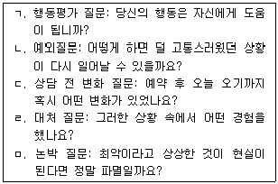
- ㄱ, ㄴ
- ㄱ, ㅁ
- ㄴ, ㄷ
- ㄷ, ㄹ
- ㄹ, ㅁ
(정답률: 26%)
90. 게슈탈트의 형성과 해소 주기에서 다음 내용에 관한 단계로 옳은 것은?
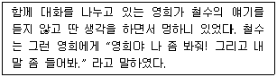
- 신체감각
- 에너지 동원
- 알아차림
- 접촉 시도
- 게슈탈트 해소
(정답률: 74%)
91. 상담의 단계와 설명의 연결이 옳은 것은?
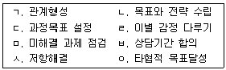
- 초기 - ㄱ, ㄴ, ㅂ
- 중기 - ㄴ, ㄷ, ㅁ
- 중기 - ㄴ, ㄷ, ㅅ
- 종결 - ㄷ, ㄹ, ㅇ
- 종결 - ㄹ, ㅅ, ㅇ
(정답률: 68%)
92. 현실치료의 개념에 관한 설명으로 옳지 않은 것은?
- 힘과 성취의 욕구: 구뇌(old brain)에서 유발되며 칭찬과 인정을 원하는 기본 욕구
- 지각체계: 지식 여과기와 가치 여과기로 구성
- 선택이론: 인간 행동의 대부분은 내적으로 동기화
- 전(全)행동: 욕구만족을 위한 활동하기, 생각하기, 느끼기, 생리반응 등의 행동
- 행동체계: 불균형이 심할 때 강한 좌절과 충동 발생
(정답률: 33%)
93. 합리적 신념과 비합리적 신념을 구분하는 기준으로 옳지 않은 것은?
- 현실적인 실현가능성
- 사고의 융통성
- 기능적 유용성
- 논리적 일치성
- 개인의 선호성
(정답률: 62%)
94. 다음 설명에 해당하는 통합주의 접근의 관점은?
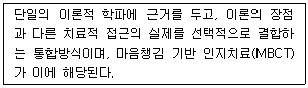
- 동화적 통합(assimilative integration)
- 기술적 통합(technical integration)
- 공통요인적 접근(common factors approach)
- 다세대 접근(multi-generational approach)
- 이론적 통합(theoretical integration)
(정답률: 35%)
95. 정신분석이론에서의 불안에 관한 내용으로 옳은 것은?
- 현실적 불안과 신경증적 불안은 내적 힘의 불균형에 의해 촉발된다.
- 어두운 골목에서 누군가 따라오는 것을 감지할 때 느끼는 불안을 신경증적 불안이라 한다.
- 초자아가 자아를 압도하는 상태를 도덕적 불안이라 한다.
- 실존적 불안은 존재가 주는 것들에 직면할 때 나타나는 어쩔 수 없는 결과이다.
- 원초아가 자아를 압도하는 상태를 현실적 불안이라 한다.
(정답률: 60%)
96. 실존주의상담에 적합한 내담자로 옳은 것을 모두 고른 것은?
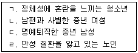
- ㄱ, ㄴ
- ㄱ, ㄹ
- ㄴ, ㄷ
- ㄴ, ㄷ, ㄹ
- ㄱ, ㄴ, ㄷ, ㄹ
(정답률: 65%)
97. 성격발달의 관점에 관한 설명으로 옳지 않은 것은?
- 에릭슨(E. Erikson)은 발달단계별 위기극복을 위한 자아의 역할을 강조했다.
- 프로이트(S. Freud)의 항문기는 에릭슨의 주도성 대 죄의식 단계와 시기적으로 일치한다.
- 프로이트(S. Freud)는 구강기에서 남근기까지를 성격형성의 기초라고 보았다.
- 에릭슨(E. Erikson)은 성격발달의 각 단계는 연속적이고 유기적인 관계가 있다고 보았다.
- 프로이트(S. Freud)는 항문기의 과도한 배변훈련이 인색, 강박, 통제적 성격특성을 갖게 한다고 보았다.
(정답률: 50%)
98. 청소년상담의 목표 설정 시 고려할 점으로 옳지 않은 것은?
- 행동용어로 구체화하여 설정한다.
- 내담자의 문제해결 뿐만 아니라 예방 및 성장에 초점을 두어 설정한다.
- 내담자의 의뢰 사유나 주변 여건을 함께 고려한다.
- 내담자가 실현가능한 목표를 설정한다.
- 상담동기가 낮은 경우 상담자가 주도적으로 설정한다.
(정답률: 72%)
99. 합리정서행동상담의 ABCDE 절차와 내용의 연결이 옳지 않은 것은?
- A - 결과와 관계된 선행사건 탐색
- B - 결과를 일으킨 행동 탐색
- C - 부적절한 정서적ㆍ행동적 결과 탐색
- D - 탐색된 사고 체계 논박
- E - 사고변화에 따른 정서적ㆍ행동적 효과 확인
(정답률: 56%)
100. 다음 사례에서 필요한 청소년상담자의 자질로 옳은 것은?
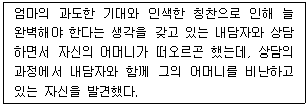
- 다문화적 이해능력
- 심리평가 및 진단능력
- 자기이해 및 성찰능력
- 의사소통능력
- 상담실무능력
(정답률: 77%)